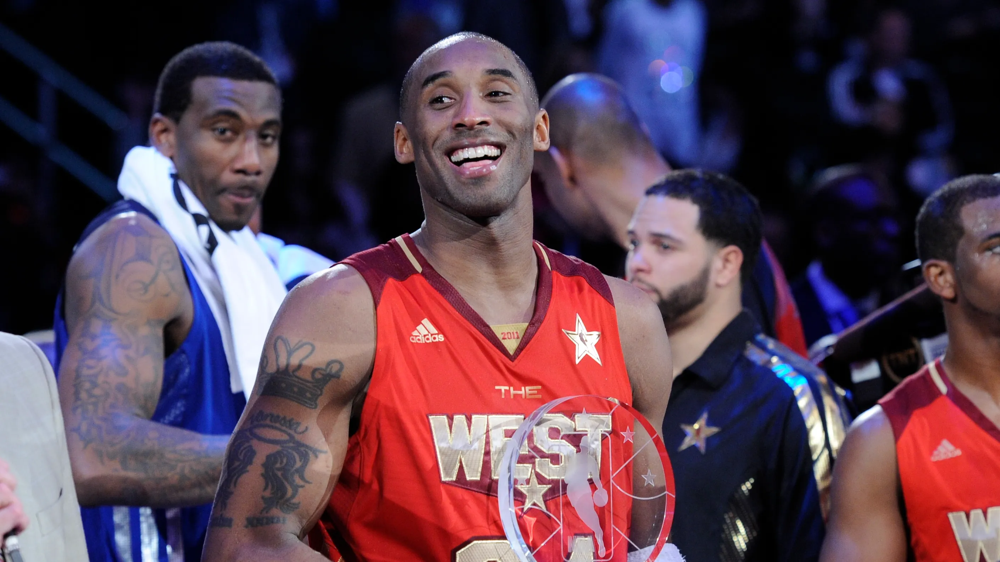

Kobe Bryant

Kobe Bean Bryant (August 23, 1978 – January 26, 2020) was an American professional basketball player. A shooting guard, he spent his entire 20-year career with the Los Angeles Lakers in the National Basketball Association (NBA). Widely regarded as one of the greatest players in the history of the sport, Bryant won five NBA championships and was an 18-time All-Star, a 15-time member of the All-NBA Team, a 12-time member of the All-Defensive Team, the 2008 NBA Most Valuable Player (MVP), and a two-time NBA Finals MVP. He also led the NBA in scoring twice and ranks fourth in league all-time regular season and postseason scoring. He was posthumously voted into the Naismith Memorial Basketball Hall of Fame in 2020 and named to the NBA 75th Anniversary Team in 2021.
The son of former NBA player Joe Bryant, he was born in Philadelphia and partly raised in Italy. Recognized as the top American high-school basketball player while at Philadelphia suburb Lower Merion, Bryant declared for the 1996 NBA draft and was selected by the Charlotte Hornets with the 13th overall pick; he was then traded to the Lakers. As a rookie, he earned a reputation as a high-flyer by winning the 1997 Slam Dunk Contest and was named an All-Star by his second season. Despite a feud with teammate Shaquille O'Neal, the pair led the Lakers to three consecutive NBA championships from 2000 to 2002.
Career
- 1996-2016 Los Angeles Lakers
Major trophies
- 5 NBA champion 2000-2002,2009-2010
- 18 NBA All-Star 1998,200-2016